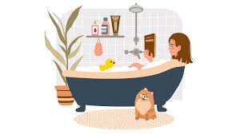
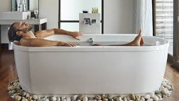
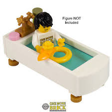
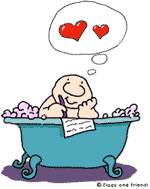

<--revenir à la page principal
Les activités dans un bains :
S’abandonner à la lecture ou à des magazines

S’endormir

Penser à la vie
Jouer au
Lego

Jouer avec son canard (seulement si tu es M.Foderé)
Écrire des poèmes d'amour ???
